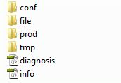
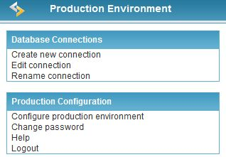

A production environment includes a common library set used by ScriptCase developed applications. It includes resources like: PDF® programming, XLS (Excel), Database Access Layer, image processing and JavaScript libraries. ScriptCase production environment is compatible to the following platforms:
Windows
Linux
IBM I5/OS400
FreeBSD
Solaris
Mac OS
A Production Server, where the production environment is installed , is the server where the Scriptcase applications are published (a Web Server supporting PHP).
Requirements:
1 - Web Server supporting PHP.
2 - Production Server configured with common libraries.

conf
Configuration directory.
file
Directory used to upload files/images, saved in sub-dir doc and img respectively.
prod
Library directory used by the applications.
tmp
Temporary file directory.
diagnosis
Configuration file with settings like: Operating System, Enabled Extensions, Directory and Files Enabled. Access it via browser (example: http://servidor/raiz-environment-produção/diagnosis.php).
info
File with info about PHP release. Access it via browser (example: http://servidor/raiz-ambiente-produção/info.php).
Production environment configuration resources interface.
Access it via http://host or ip/raiz-ambiente-produção/prod
Interface Resources.

Click here to know more about those configurations
*Note – See the item Connecting with Database from the WebHelp for more info on how connect the ScriptCase.